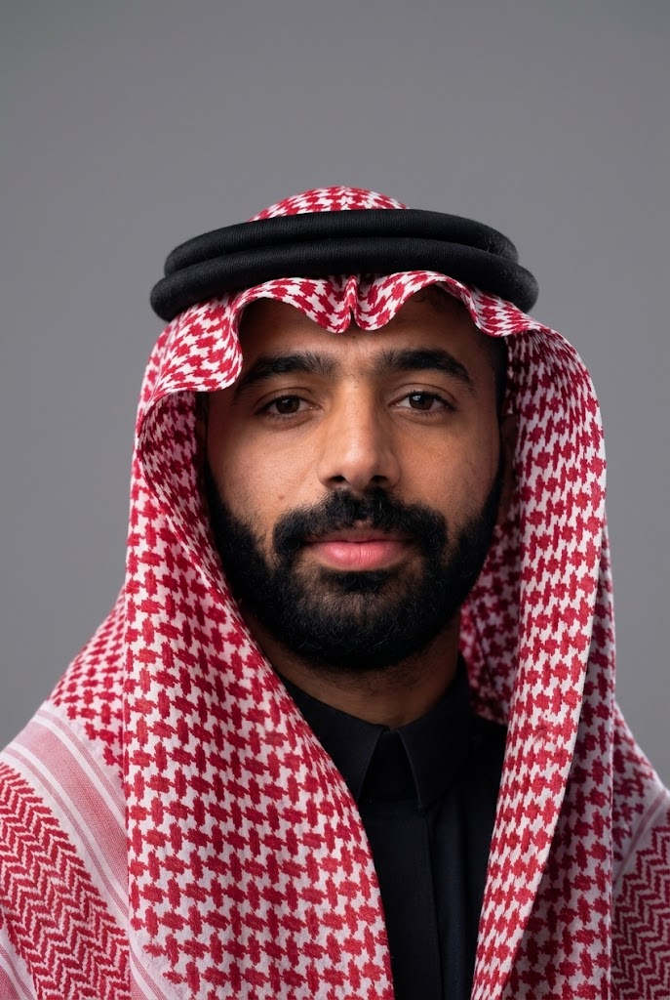

Motivated Computer Engineering Computer Engineering graduate with a strong background in team collaboration and problem-solving. I have a proven ability to work effectively with diverse teams and adapt to changing environments. I am seeking an opportunity at a dynamic, people-driven IT company where I can apply my technical expertise, customer service skills, and work ethic to help overcome challenges, deliver solutions, and contribute to the organization’s success.
Bachelor of Science in Computer Engineering from Prince Sattam bin Abdulaziz University